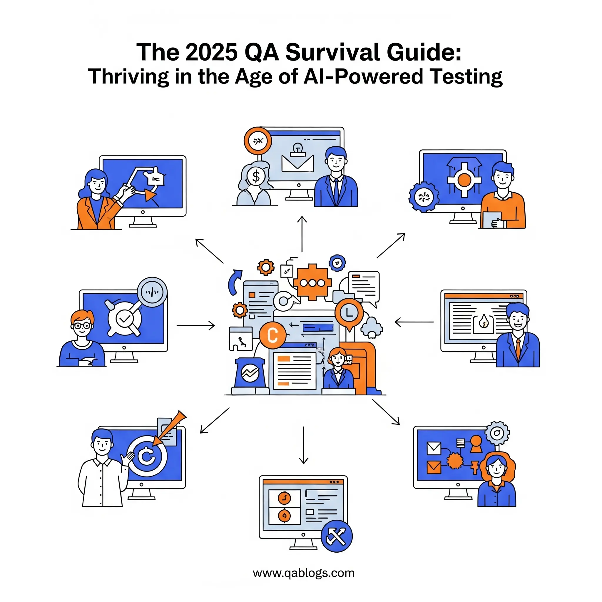

The 2025 QA Survival Guide: Thriving in the Age of AI-Powered Testing

Key Takeaways
- Modern QA professionals must master AI-assisted testing, cloud-native strategies, and API-first testing approaches to stay competitive in 2025.
- The QA landscape has shifted from gatekeeper to enabler, requiring new skills in automation, monitoring, and cross-functional collaboration.
- Successful QA teams focus on business outcomes, user experience, and continuous learning rather than just technical metrics.
- Implementation should follow a phased approach: foundation building (months 1-3), advanced capabilities (months 4-8), and optimization (months 9-12).
- Future-ready QA professionals will become quality advocates who influence product decisions and drive organizational transformation.
The software testing landscape has undergone a seismic shift. As we navigate through 2025, quality assurance professionals find themselves at the intersection of artificial intelligence, accelerated development cycles, and increasingly complex software architectures. The traditional QA playbook—while still valuable—no longer suffices in an environment where applications span multiple clouds, integrate dozens of microservices, and must deliver flawless user experiences across countless devices and platforms.
This survival guide isn't just about keeping up; it's about positioning yourself as an indispensable QA professional in an era where the very definition of quality is being rewritten by emerging technologies. Whether you're a seasoned testing veteran or a newcomer to the field, the strategies and insights in this guide will help you not just survive but thrive in the modern QA landscape.
The New QA Reality: What Changed and Why It Matters
The Acceleration Imperative
Gone are the days when software releases followed predictable quarterly cycles. Today's organizations deploy code multiple times per day, with some tech giants pushing updates every few minutes. This shift toward continuous deployment has fundamentally altered the QA professional's role from gatekeeper to enabler.
Consider Netflix's deployment philosophy: they release thousands of changes daily across their global infrastructure. Their QA approach focuses on automated testing pipelines that can validate changes in real-time, demonstrating how modern QA teams must embrace speed without compromising quality.
The Complexity Explosion
Modern applications are no longer monolithic entities. They're distributed systems comprising microservices, APIs, databases, third-party integrations, and cloud-native components. Each element introduces potential failure points that traditional testing approaches struggle to address comprehensively.
The average enterprise application now integrates with 16 different external services, creating a web of dependencies that can fail in unpredictable ways. QA professionals must understand these interconnections and design testing strategies that account for system-wide behavior, not just individual component functionality.
Essential Skills for the Modern QA Professional
1. AI-Assisted Testing Mastery
Artificial intelligence isn't replacing QA professionals—it's augmenting their capabilities. Smart test generation, predictive analytics for defect detection, and automated test maintenance are becoming standard tools in the QA toolkit.
Key AI Testing Technologies to Master:
- Autonomous Test Generation: Tools like Testim and Mabl use machine learning to create and maintain test cases automatically
- Visual AI Testing: Applitools and similar platforms detect visual regressions using computer vision
- Predictive Analytics: Platforms that analyze code changes to predict which areas need the most testing attention
Practical Implementation: Start by integrating one AI-powered tool into your existing workflow. Many QA teams begin with visual regression testing tools because they provide immediate, tangible value while requiring minimal setup.
2. Cloud-Native Testing Expertise
With 83% of enterprise workloads now running in the cloud, QA professionals must understand cloud-native testing strategies. This includes containerized testing environments, serverless application testing, and multi-cloud validation approaches.
Critical Cloud Testing Concepts:
- Infrastructure as Code Testing: Validating cloud configurations before deployment
- Chaos Engineering: Deliberately introducing failures to test system resilience
- Performance Testing at Scale: Using cloud resources to simulate realistic load conditions
3. API-First Testing Mindset
Modern applications are built API-first, making API testing a fundamental skill rather than a specialty. The shift toward headless commerce, microservices architectures, and mobile-first development means APIs often carry more business logic than user interfaces.
API Testing Best Practices for 2025:
- Contract Testing: Ensuring API contracts remain consistent across service boundaries
- Security Testing: Validating authentication, authorization, and data protection
- Performance Testing: Monitoring API response times and throughput under various conditions
The Critical Technology Stack for 2025
Test Automation Frameworks
The choice of automation framework can make or break your testing strategy. Modern frameworks must support multiple programming languages, integrate with CI/CD pipelines, and provide detailed reporting capabilities.
Leading Frameworks and Their Strengths:
- Playwright: Excels at cross-browser testing with built-in auto-waiting and mobile device simulation
- Cypress: Offers excellent developer experience with time-travel debugging and real-time browser testing
- Selenium 4: Provides enhanced WebDriver capabilities and better support for modern web applications
CI/CD Integration Tools
Testing must be seamlessly integrated into the development pipeline. The most effective QA teams use tools that trigger tests automatically, report results in real-time, and block deployments when quality gates aren't met.
Essential CI/CD Testing Tools:
- Jenkins with Pipeline as Code: Enables complex testing workflows with version-controlled configurations
- GitHub Actions: Provides native integration with code repositories and extensive marketplace of testing actions
- GitLab CI/CD: Offers built-in testing capabilities with excellent reporting and artifact management
Monitoring and Observability
Modern QA extends beyond pre-deployment testing to include production monitoring and user experience validation. Observability tools help QA teams understand how applications behave in real-world conditions.
Key Monitoring Technologies:
- Synthetic Monitoring: Tools like Datadog and New Relic that simulate user interactions in production
- Real User Monitoring (RUM): Platforms that capture actual user experience metrics
- Application Performance Monitoring (APM): Solutions that track application behavior and performance metrics
Strategic Approaches for Different Testing Scenarios
Microservices Testing Strategy
Testing microservices requires a multi-layered approach that validates individual services, service interactions, and end-to-end workflows. The testing pyramid for microservices looks different from traditional applications.
Microservices Testing Layers:
- Unit Tests: Fast, isolated tests for individual service components
- Integration Tests: Validate service-to-service communications
- Contract Tests: Ensure API contracts remain consistent
- End-to-End Tests: Validate complete user workflows across services
Mobile-First Testing Approach
With mobile traffic accounting for over 58% of web usage, mobile testing can't be an afterthought. Modern QA teams adopt mobile-first strategies that prioritize mobile user experience while ensuring desktop compatibility.
Mobile Testing Essentials:
- Device Coverage Strategy: Testing on representative devices rather than attempting comprehensive coverage
- Performance Testing: Validating application behavior under various network conditions
- Accessibility Testing: Ensuring applications work with screen readers and assistive technologies
Security Testing Integration
Security testing is no longer a separate phase—it's integrated throughout the development lifecycle. QA professionals must understand common security vulnerabilities and how to test for them.
Security Testing Focus Areas:
- OWASP Top 10 Vulnerabilities: Understanding and testing for the most common security risks
- API Security: Validating authentication, authorization, and data protection mechanisms
- Data Privacy Compliance: Ensuring applications meet GDPR, CCPA, and other privacy regulations
Building Future-Ready QA Teams
Cross-Functional Collaboration
Modern QA teams work embedded within development teams rather than as separate entities. This shift requires new collaboration skills and a deeper understanding of development processes.
Effective Collaboration Strategies:
- Shift-Left Testing: Involving QA professionals in requirement analysis and design phases
- Three Amigos Sessions: Regular meetings between product owners, developers, and QA professionals
- Shared Responsibility: Developers and QA professionals both contribute to test automation and quality metrics
Continuous Learning Culture
The rapid pace of technological change means QA professionals must commit to continuous learning. The most successful teams create learning cultures that encourage experimentation and knowledge sharing.
Learning Initiatives That Work:
- Internal Tech Talks: Regular presentations on new tools and techniques
- Hackathons: Dedicated time for exploring new technologies and approaches
- External Training: Investment in conferences, certifications, and online courses
Measuring Success in Modern QA
Key Performance Indicators (KPIs)
Traditional QA metrics like defect counts and test case pass rates don't capture the full picture of modern quality assurance effectiveness. New metrics focus on business impact and user experience.
Modern QA Metrics:
- Mean Time to Recovery (MTTR): How quickly teams can resolve production issues
- Deployment Frequency: How often teams can deploy code changes
- Customer Satisfaction Scores: Direct feedback on user experience quality
- Test Automation ROI: The business value generated by automated testing investments
Quality Gates and Governance
Effective quality gates balance speed with safety, allowing teams to deploy rapidly while maintaining quality standards. These gates must be automated and provide clear, actionable feedback.
Effective Quality Gate Criteria:
- Code Coverage Thresholds: Minimum percentage of code covered by automated tests
- Performance Benchmarks: Response time and throughput requirements
- Security Scan Results: Automated security vulnerability assessments
- Accessibility Compliance: Validation against WCAG guidelines
Practical Implementation Roadmap
Phase 1: Foundation Building (Months 1-3)
Start with fundamental improvements to your current testing approach. Focus on automating repetitive tasks and improving test reliability.
Immediate Actions:
- Audit your current test suite and identify the most valuable tests to automate
- Implement basic CI/CD integration for your automated tests
- Establish clear quality gates for your deployment pipeline
- Begin cross-training team members on new tools and techniques
Phase 2: Advanced Capabilities (Months 4-8)
Expand your testing strategy to include more sophisticated approaches and tools. This phase focuses on improving test coverage and efficiency.
Advanced Initiatives:
- Implement API testing automation for all critical service endpoints
- Add performance testing to your regular testing cycles
- Integrate security testing tools into your development pipeline
- Experiment with AI-powered testing tools in non-critical areas
Phase 3: Optimization and Innovation (Months 9-12)
Focus on optimizing your testing strategy and exploring cutting-edge approaches. This phase emphasizes continuous improvement and innovation.
Optimization Goals:
- Achieve comprehensive test automation coverage for critical user journeys
- Implement advanced monitoring and observability practices
- Establish a culture of continuous learning and experimentation
- Develop expertise in emerging testing technologies and methodologies
Common Pitfalls and How to Avoid Them
Over-Automation Trap
Not everything should be automated. The most effective QA teams strategically choose what to automate based on risk, frequency, and maintenance costs.
Automation Decision Framework:
- High-Risk, High-Frequency: Automate these tests immediately
- High-Risk, Low-Frequency: Consider manual testing with detailed documentation
- Low-Risk, High-Frequency: Automate if maintenance costs are reasonable
- Low-Risk, Low-Frequency: Manual testing is often more cost-effective
Tool Proliferation
The abundance of testing tools can lead to a fragmented toolchain that's difficult to maintain. Successful teams choose tools that integrate well together and align with their specific needs.
Tool Selection Criteria:
- Integration Capabilities: How well does the tool work with your existing stack?
- Learning Curve: Can your team become proficient quickly?
- Scalability: Will the tool grow with your organization?
- Community Support: Is there an active community and regular updates?
The Road Ahead: Preparing for What's Next
Emerging Technologies Impact
Several emerging technologies will significantly impact QA practices in the coming years. Understanding these trends helps QA professionals prepare for future challenges and opportunities.
Technologies to Watch:
- Quantum Computing: Will require new approaches to testing quantum algorithms and applications
- Extended Reality (XR): Testing VR, AR, and MR applications requires specialized skills and tools
- Edge Computing: Distributed computing architectures need new testing strategies
- Blockchain Applications: Decentralized systems require unique testing approaches
Skills Evolution
The QA profession continues evolving, requiring professionals to expand their skill sets beyond traditional testing. The most successful QA professionals will become quality advocates who influence product decisions and user experience.
Future-Ready Skills:
- Data Analysis: Understanding user behavior through analytics and metrics
- Product Management: Contributing to product strategy and roadmap decisions
- Customer Experience: Focusing on end-user satisfaction and business outcomes
- Risk Assessment: Evaluating and communicating quality risks to stakeholders
Conclusion: Your QA Journey Starts Now
The QA profession has never been more exciting or more critical to software development success. The strategies and approaches outlined in this survival guide provide a roadmap for thriving in the modern testing landscape, but success ultimately depends on your commitment to continuous learning and adaptation.
The organizations that will dominate their markets in 2025 and beyond are those that view quality as a competitive advantage rather than a cost center. As a QA professional, you have the opportunity to drive this transformation by embracing new technologies, developing strategic thinking skills, and focusing on business outcomes rather than just technical metrics.
Start your transformation today by choosing one area from this guide to focus on immediately. Whether it's learning a new automation framework, implementing AI-powered testing tools, or improving your team's collaboration practices, the key is to begin and maintain momentum.
The future of QA is bright, but it belongs to those who actively shape it. What will you do today to ensure you're not just surviving but thriving in the age of AI-powered testing?
Join Our Community of QA Professionals
Get exclusive access to in-depth articles, testing strategies, and industry insights. Stay ahead of the curve with our expert-curated content delivered straight to your inbox.
Nikunj Mistri
Founder, QA Blogs
About the Author